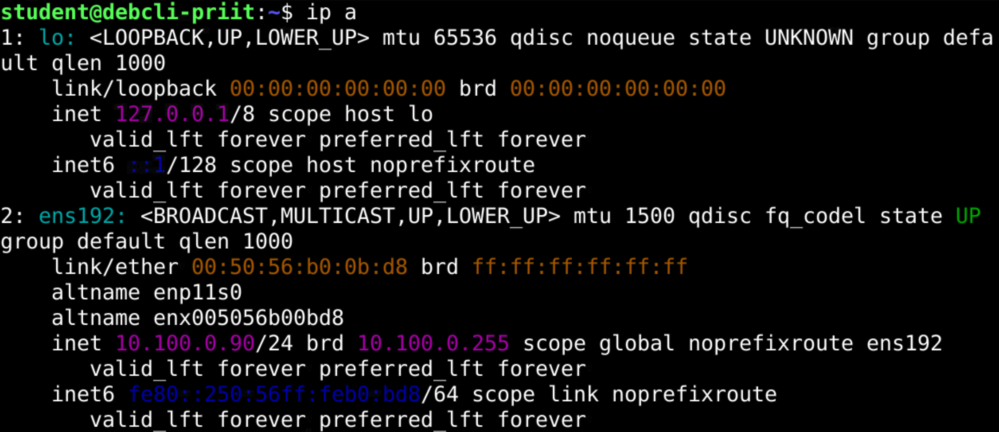
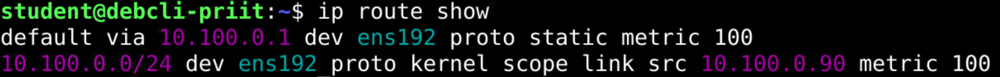

Võrguparameetrite seadistamine Linuxis¶
Linuxi võrguühendus vajab sobivat IP-aadressi, võrguprefiksit, marsruute ja nimelahendust. Neid saab vaadata ühiste tööriistadega, kuid püsiva seadistuse tegemise viis sõltub kasutatavast võrguhaldurist.
Materjali põhikeskkond on Debian 13. Põhjalikumalt käsitleme ifupdown-i ning eraldi peatükkides NetworkManagerit, systemd-networkd-d ja Ubuntu Serveris levinud Netplani. Need on alternatiivsed seadistusviisid: ühe liidese näidetele ei tule järjest kõiki meetodeid rakendada.
Õpieesmärgid
Pärast materjali läbimist oskad:
- selgitada IP-aadressi, prefiksi, vaikimisi lüüsi, DNS-i ja DHCP ülesannet;
- vaadata Linuxi võrguliideste aadresse, olekut ja marsruute;
- leida, milline tööriist konkreetset liidest haldab;
- seadistada IPv4-võrguparameetreid kasutatavale keskkonnale sobiva meetodiga;
- kontrollida aadressi, marsruutimist, nimelahendust ja teenuse kättesaadavust;
- säilitada algseadistuse ning taastada see vajaduse korral konsoolilt.
1. Milliseid parameetreid seadistame?¶
| Parameeter | Ülesanne | Näide |
|---|---|---|
| IP-aadress — IP address | Tähistab liidese aadressi IP-võrgus. | 10.100.0.20 |
| Võrguprefiks — network prefix | Määrab, milline aadressi osa tähistab võrku. | /24 |
| Alamvõrgumask — subnet mask | IPv4-prefiksi teine esitusviis. | /24 vastab maskile 255.255.255.0. |
| Vaikimisi lüüs — default gateway | Järgmine hüpe sihtkohtadele, mille jaoks pole täpsemat marsruuti. Tavaliselt ruuteri aadress. | 10.100.0.1 |
| DNS-server — DNS server | Vastab nimepäringutele, näiteks aitab leida nimele vastava IP-aadressi. | 1.1.1.1 |
| DHCP — Dynamic Host Configuration Protocol | Võimaldab saada aadressi ja muid parameetreid automaatselt. | DHCP-server annab aadressi koos liisimisajaga. |
Näites 10.100.0.20/24 on IPv4-võrk 10.100.0.0/24. Tavapärased hostiaadressid on selles võrgus 10.100.0.1 kuni 10.100.0.254; aadress peab olema konkreetsele seadmele määratud ja vaba. Lüüs 10.100.0.1 asub siin samas alamvõrgus.
Materjali aadressid ja liides ens192 on näited. Laboris kasuta õpetaja antud väärtusi. Avalikud DNS-serverid ei pruugi osata lahendada kooli või ettevõtte sisemisi nimesid; selleks kasuta organisatsiooni DNS-serverit.
IPv4 ja IPv6 on eri protokollid. Siinsed püsiseadistuse näited keskenduvad IPv4-le. IPv4 muutmine ei tähenda automaatselt IPv6 seadistuse muutmist ega keelamist.
2. Võrguparameetrite vaatamine¶
2.1. Liideste aadressid ja olek¶
Sama käsu levinud lühivorm on ip a. Lühikese ülevaate annab:
See näitab liideste nimesid, olekut ja aadresse. Võid kohata nimesid ens192, ens18 või enp1s0; need ei pea eri masinates kattuma. lo on kohalik loopback-liides.

Ühe liidese täpsem teave:
ip link näitab muu hulgas liidese olekut ja MAC-aadressi, mitte IP-aadresse. Tähis UP kirjeldab administratiivset lubamist; see ei tõenda iseenesest toimivat kaabelühendust, IP-seadistust ega internetiühendust.
2.2. Marsruudid¶
Näidisrida:

See tähendab, et IPv4 vaikimisi marsruut kasutab lüüsi 10.100.0.1 liidese ens192 kaudu. Konkreetse sihtkoha jaoks valitavat marsruuti saab uurida:
Käsk näitab marsruudi valikut, kuid ei saada ise ühenduse toimimist tõendavat päringut. IPv6 marsruute näitab ip -6 route show.
3. Võrguhalduri tuvastamine ja muudatuse ettevalmistamine¶
3.1. Kes konkreetset liidest haldab?¶
| Lahendus | Püsiseadistuse koht või tööriist |
|---|---|
| ifupdown | /etc/network/interfaces ja sealt kaasatud failid, näiteks /etc/network/interfaces.d/. |
| NetworkManager | Ühendusprofiilid, mida hallatakse näiteks nmcli, nmtui või graafilise liidesega. |
| systemd-networkd | Näiteks /etc/systemd/network/*.network. |
| Netplan | YAML-failid näiteks /etc/netplan/; seadistus genereeritakse taustal töötavale võrguhaldurile. |
Debiani nimi ega systemd kasutamine ei määra üksi, milline lahendus sinu liidest haldab. Ühes süsteemis võib eri liideseid hallata eri tarkvara, kuid sama liidese aadresse ja marsruute ei peaks korraga seadistama mitu võrguhaldurit.
Alusta teenuste olekutest:
Mõni teenus võib puududa või olla mitteaktiivne. Seejärel uuri sobiva tööriistaga konkreetset liidest:
nmcli eeldab paigaldatud NetworkManagerit. networkctl näitab liidest systemd-networkd vaatenurgast. Ainult teenuse aktiivne olek või konfiguratsioonifaili olemasolu ei tõenda veel selle liidese haldamist.
3.2. Säilita algseis¶
Enne muutmist märgi üles aadress, prefiks, vaikimisi lüüs, DNS-serverid ja võrguhaldur. Kopeeri muudetav seadistus failinimega, mida haldur ei loe aktiivse konfiguratsioonina.
ifupdown-i põhifaili koopia näide:
Kui muudad kaasatud faili kataloogis interfaces.d, varunda ka see fail. NetworkManageri puhul salvesta profiili senised väärtused ja vajaduse korral tee profiilist eraldi taastamiskoopia. Algfaili säilitamine ja virtuaalmasina snapshot täidavad erinevaid taastamisvajadusi.
Võrgumuudatus võib katkestada kaugühenduse
IP-aadressi, lüüsi või aktiivse liidese muutmine võib katkestada SSH-ühenduse.
4. Debian 13: ifupdown ja interfaces-fail¶
Seda peatükki kasuta siis, kui sinu liidest haldab ifupdown. Graafilise töölauaga või pilvest loodud Debiani masin võib kasutada teist lahendust.
4.1. Faili ülesehitus¶
Kui hakkad aktiivse liidese seadistust asendama, säilita algfail ja ava konsool. Peata liides enne vana seadistuse muutmist, eriti DHCP-lt staatilisele aadressile minnes:
Nii saab ifupdown vana konfiguratsiooni järgi ühenduse lõpetada. Võrk võib kuni uue seadistuse rakendamiseni puududa. Seejärel ava konfiguratsioon:
Näites säilib loopback-liidese seadistus ning kaasatakse kataloogi interfaces.d failid:
Enne põhifaili muutmist vaata ka kaasatud faile. Sama liidese dubleerivad määrangud eri failides võivad tekitada segadust. Kommentaarid kirjuta omaette reale.
4.2. DHCP kaudu saadav IPv4-seadistus¶
inet tähistab siin IPv4 seadistust ning dhcp automaatset aadressi hankimist. Töötamiseks on vaja ligipääsu DHCP-serverile ja süsteemis sobivat DHCP-kliendilahendust.
4.3. Staatiline IPv4-seadistus¶
Asenda sama liidese DHCP-plokk staatilisega:
address määrab aadressi koos prefiksiga; gateway lisab vaikimisi lüüsi.
DNS-i seadistamine sõltub nimelahenduse korraldusest; seda käsitleb järgmine peatükk. Ainult IP-aadressi ja lüüsi sisestamine ei määra DNS-servereid.
4.4. auto ja allow-hotplug¶
| Määrang | Tähendus |
|---|---|
auto ens192 |
Liides tuuakse üles käsuga ifup -a, mida kasutatakse ka süsteemi käivitamisel. |
allow-hotplug ens192 |
Liidese aktiveerimise saab käivitada selle tuvastamine udev'i poolt, näiteks käivitamisel või USB-võrgukaardi lisamisel. |
allow-hotplug ei tähenda DHCP-d ega võrgukaabli ühendamise jälgimist. Seda võib kasutada ka staatilise aadressiga liidesel.
4.5. Seadistuse rakendamine¶
Kui liides peatati enne konfiguratsiooni muutmist, rakenda salvestatud seadistus:
Kui muudad juba aktiivset seadistust, planeeri vana ühenduse peatamine ja uue aktiveerimine konsoolilt. Lihtsalt ifup juba üles toodud liidesele ei pruugi muudatust rakendada.
Kontrolli aadressi ja marsruute:
Teenuse oleku vaatamiseks sobib:
5. DNS ja /etc/resolv.conf¶
5.1. Kõigepealt tuvasta haldusviis¶
Fail võib olla tavaline tekstifail või sümbollink näiteks resolvconf-i või systemd-resolved-i hallatavale failile. Faili päis ja lingi siht aitavad lahendust tuvastada. Võrguhaldur või DHCP-klient võib faili hiljem uuendada.
DNS-serveri aadress, selle info edastamine rakendustele ja nimede lahendamise teenus on seotud, kuid eri ülesanded. Võrgufailis oleva DNS-rea olemasolu üksi ei tõenda, et rakendused seda kasutavad.
5.2. ifupdown koos resolvconf-iga¶
Järgmine näide eeldab, et laborimasinas on resolvconf paigaldatud ja selle haldusviis seadistatud, sealhulgas /etc/resolv.conf seos failiga /run/resolvconf/resolv.conf.
Staatilise liidese plokile saab lisada:
auto ens192
iface ens192 inet static
address 10.100.0.20/24
gateway 10.100.0.1
dns-nameservers 1.1.1.1 8.8.8.8
ifupdown-i ja resolvconf-i integratsioon töötleb dns-nameservers väärtusi liidese aktiveerimisel. Paki paigaldamist ja olemasoleva nimelahenduse ülevõtmist planeeritakse enne võrgumuudatust; paketi nimi on resolvconf.
5.3. Käsitsi hallatav resolv.conf¶
Kui on kontrollitud, et faili ei genereeri mõni teine teenus, saab staatilise nimelahenduse korral faili muuta:
Näidissisu:
See sobib teadlikult valitud käsitsi haldamiseks. Genereeritud faili käsitsi muutmine ei ole püsiva DNS-seadistuse üldine lahendus. Kasuta oma võrgu jaoks sobivaid DNS-servereid.
5.4. systemd-resolved¶
systemd-resolved pakub kohalikku nimelahendust ning võib saada DNS-serverite teabe näiteks systemd-networkd-lt või NetworkManagerilt. Selle oleku ja serverite vaatamiseks:
Need käsud eeldavad vastava tarkvara olemasolu; resolvectl ei ole iga Debiani paigalduse universaalne DNS-i vaatamise käsk.
systemd-resolved-i kasutavas lahenduses on soovitatav /etc/resolv.conf link failile /run/systemd/resolve/stub-resolv.conf. Seal olev 127.0.0.53 tähistab kohalikku DNS-vahendajat, mitte vigast välise DNS-serveri aadressi. Tegelikud ülesvoolu serverid on nähtavad resolvectl status väljundis.
Link /run/systemd/resolve/resolv.conf failile on samuti toetatud, kuid selle kaudu pöörduvad tavapärased DNS-kliendid otse failis loetletud serverite poole. See võib mööda minna kohaliku resolveri liidesepõhisest nimelahenduse korraldusest.
6. NetworkManager: profiilid, nmcli ja nmtui¶
NetworkManager sobib nii graafilise töölauaga masinale kui ka serverile. nmcli on käsureatööriist ja nmtui terminalis töötav menüüliides.
6.1. Liides ja ühendusprofiil¶
Liides on näiteks ens192, kuid selle profiili nimi võib olla Wired connection 1. Profiil salvestab ühenduse seadistuse; ühel liidesel võib eri olukordadeks olla mitu profiili. Muutmiskäskudes kasuta tegelikku profiilinime või UUID-d. [5]
6.2. Staatiline IPv4-seadistus¶
Näites muudetakse olemasolevat profiili nimega Wired connection 1:
sudo nmcli connection modify "Wired connection 1" \
ipv4.method manual \
ipv4.addresses "10.100.0.20/24" \
ipv4.gateway "10.100.0.1" \
ipv4.dns "1.1.1.1 8.8.8.8"
Käsu lõpus olev \ jätkab käsku järgmisel real. Muudatus salvestub profiili, kuid aktiivsele ühendusele tuleb see veel rakendada. Konsoolilt saab profiili aktiveerida:
See võib ühenduse hetkeks katkestada. Eraldi connection down käivitamine ei ole alati vajalik ja võib kaugühenduse katkestada enne järgmise käsu sisestamist. Kontrolli tulemust:
6.3. DHCP-le tagasiminek¶
Staatilise näite väärtuste eemaldamine ja automaatse IPv4-seadistuse valimine:
sudo nmcli connection modify "Wired connection 1" \
ipv4.method auto \
ipv4.addresses "" \
ipv4.gateway "" \
ipv4.dns "" \
ipv4.ignore-auto-dns no
sudo nmcli connection up "Wired connection 1"
See on näide, mitte iga keerukama profiili täielik lähtestamine: eraldi määratud marsruudid ja muud omadused vajavad samuti kontrollimist.
Menüüde kaudu seadistamiseks käivita:
Vali õige profiil, muuda parameetrid, salvesta ja rakenda ühenduse muudatus. Kontrolli tulemust samade vaatamiskäskudega. NetworkManageri põhimõtted on kasutatavad ka näiteks RHEL-is; konkreetne profiil ja võimalused sõltuvad süsteemist.
7. systemd-networkd: .network-failid¶
7.1. Eeltingimused ja faili valik¶
Kasuta seda peatükki systemd-networkd hallatava liidese puhul. Kui lähed üle teiselt haldurilt, tuleb enne eemaldada selle liidese konkureeriv haldus. Kogu /etc/network/interfaces faili ümbernimetamine ei ole üldine üleminekujuhend: säilitada tuleb teiste liideste ja loopback'i vajalik seadistus.
Faili näitlik asukoht:
Laiend peab olema .network. Failid järjestatakse nime järgi ning rakendub esimene liidesega sobiv fail. Ära hoia aktiivsena kahte sama liidest sobitavat DHCP- ja staatilise seadistuse faili. DHCP-lt staatilisele üle minnes muuda sama faili sisu.
7.2. DHCP kaudu IPv4-seadistus¶
[Match] määrab liidese, [Network] võrguparameetrid. DHCP=ipv4 lubab DHCPv4; DHCP=yes lubaks nii DHCPv4 kui ka DHCPv6. IPv6 ruuteriteadete töötlemine on sellest eraldi seadistus.
7.3. Staatiline IPv4-seadistus¶
Sama faili alternatiivne sisu:
[Match]
Name=ens192
[Network]
DHCP=no
Address=10.100.0.20/24
DNS=1.1.1.1
DNS=8.8.8.8
[Route]
Destination=0.0.0.0/0
Gateway=10.100.0.1
[Route] plokk määrab siin IPv4 vaikimisi marsruudi. DNS-read annavad serverite teabe systemd-resolved-ile; toimivaks nimelahenduseks peab ka see osa olema seadistatud.
7.4. Teenused, DNS ja rakendamine¶
Kui on teadlikult valitud networkd + resolved ja teiste haldurite konflikt eemaldatud, peab systemd-resolved olema paigaldatud. Debianis on paketi nimi systemd-resolved. Paigaldamine võib muuta nimelahenduse korraldust, seega tee see võrgu veel töötamise ajal ja säilita senine seadistus.
Teenuste lubamine koos kohese käivitamisega:
sudo systemctl enable --now systemd-networkd.service
sudo systemctl enable --now systemd-resolved.service
enable üksi lubab järgmisteks käivitusteks; --now lisab kohese käivitamise. Kontrolli /etc/resolv.conf tegelikku sihti. Kui selles lahenduses on vaja seadistada soovitatud stub-link, varunda senine fail või link ja loo seos:
sudo cp -a /etc/resolv.conf /root/resolv.conf.before-network-change
sudo ln -sfn /run/systemd/resolve/stub-resolv.conf /etc/resolv.conf
See link on mõeldud töötava systemd-resolved-i kasutamiseks, mitte kõigi Linuxi süsteemide parandamiseks.
Juba töötava networkd konfiguratsiooni muutmise järel:
reload loeb failid uuesti; reconfigure rakendab liidesele seadistuse. Kontrollimiseks:
Networkd faili muutmine ei nõua tavaliselt systemctl daemon-reload käsku: see on systemd üksusefailide, mitte .network konfiguratsiooni uuesti laadimiseks.
8. Ubuntu Server: Netplan¶
8.1. Netplan ja taustal töötav haldur¶
Ubuntu Serveris kasutatakse sageli Netplani. See loeb YAML-seadistuse ja genereerib selle systemd-networkd või NetworkManageri jaoks. Nimelahendusega võib tegeleda systemd-resolved. Need komponendid ei ole ühe tööriista eri nimed.
Failid paiknevad tavaliselt /etc/netplan/ kataloogis. Nimi võib olla näiteks 00-installer-config.yaml või 50-cloud-init.yaml. Uuri olemasolevaid faile enne uue lisamist: mitu faili võivad koos seadistust mõjutada ning pilvemallis võib konfiguratsiooni genereerida cloud-init.
YAML-i taandamisel kasuta tühikuid, mitte tabulaatoreid. Näidetes on üks liides; asenda ens192 oma liidese nimega.
8.2. DHCP-näide¶
8.3. Staatiline IPv4-näide¶
Sama liidese DHCP-seadistuse asemel:
network:
version: 2
renderer: networkd
ethernets:
ens192:
dhcp4: false
addresses:
- 10.100.0.20/24
routes:
- to: default
via: 10.100.0.1
nameservers:
addresses:
- 1.1.1.1
- 8.8.8.8
routes määrab marsruudid ja nameservers DNS-i. See näide ei ole IPv6 täielik konfiguratsioon. Kasuta sobivaid aadresse ja kontrolli, et teine YAML-fail ei lisa samale liidesele vastuolulist seadistust. [11]
8.4. Kontroll ja rakendamine¶
Vali tegelik muudetav fail. Näiteks uue näitefaili õigused saab piirata nii:
Kontrolli konfiguratsiooni genereerimist:
See võib leida näiteks YAML-i või Netplani määrangute vigu, kuid ei tõenda veel aadressi sobivust ega ühenduse toimimist.
Kinnitusega proovimine:
Netplan proovib seadistust ja ootab kinnitust. Kinnituseta peaks rakenduma tagasipöördumine; selle tulemust tuleb vajaduse korral kontrollida. Hoia konsool ja algseadistus alles. Teadlikult kohe rakendamiseks on olemas ka sudo netplan apply; edukalt kinnitatud try järel pole apply kohustuslik lisasamm.
Tulemust kontrolli ip-käskudega ning systemd-resolved-i kasutamisel resolvectl status abil. Püsiv DNS-seadistus tehakse Netplanis, mitte genereeritud /etc/resolv.conf faili käsitsi muutes.
9. Kuidas kontrollida, kas seadistus töötab?¶
Kontrolli osade kaupa. Üks edukas käsk ei tõenda kõigi võrguvõimaluste toimimist.
| Järk | Näidiskäsk | Mida tulemus aitab hinnata? |
|---|---|---|
| Liides ja aadress | ip -brief address show |
Õige liides ja oodatud aadress/prefiks. |
| Marsruudid | ip route show |
Kohaliku võrgu ja vaikimisi marsruudi olemasolu. |
| Lüüs | ping -c 4 10.100.0.1 |
Kas lüüs vastab ICMP kajapäringule? |
| IP-ühendus | ping -c 4 1.1.1.1 |
Kas see väline aadress vastab, kui välisühendus on laboris lubatud? |
| Süsteemi nimelahendus | getent ahosts debian.org |
Kas süsteemi nimepäring leiab nimele aadresse? |
| DNS-päring | nslookup debian.org |
Kas DNS-päring saab vastuse ja millist serverit kasutati? |
| Vajalik teenus | Ühendus oma serveri SSH- või veebiteenusega. | Kas ülesande jaoks vajalik rakendusühendus töötab? |
ping-i vastuse puudumine ei tõenda alati ühenduse katkemist: ICMP võib olla piiratud. getent kasutab süsteemi nimelahenduse järjekorda, mis võib hõlmata ka /etc/hosts faili; see ei tõenda üksinda just DNS-serveri kasutamist. nslookup on Debianis saadaval näiteks paketi dnsutils kaudu.
Näide: ühendus IP-aadressiga toimib, kuid nimed ei lahene. Uuri DNS-serveri valikut ja nimelahenduse korraldust, mitte ära muuda kohe töötavat IP-aadressi.
Kui konfiguratsioon peab olema püsiv, kontrolli seda pärast taaskäivitamist: aadress, marsruudid, DNS ja vajalik teenus peavad endiselt toimima. Tee taaskäivitus alles siis, kui taastamise võimalus on olemas.
10. Veaotsing ja algseisu taastamine¶
10.1. Levinud põhjused¶
| Sümptom | Mida kontrollida? |
|---|---|
| Õiget aadressi pole. | Liidese nimi, sobiv konfiguratsioonifail või profiil, DHCP kättesaadavus. |
| Oma alamvõrk töötab, teised mitte. | Prefiks, vaikimisi lüüs, marsruutimine ja tulemüür. |
| IP-aadress töötab, nimi mitte. | DNS-serverid, /etc/resolv.conf haldaja ja nimelahendaja olek. |
| Muudatus kaob uuesti. | Kas muudeti ainult hetkeolekut või genereeritud faili? Kas teine haldur kirjutab seadistuse üle? |
| NetworkManager muudab vale ühendust. | Kas profiili nimi ja liidese nimi aeti segi? |
| Staatilise asemel jääb DHCP. | Kas varasem .network fail sobitub esimesena või teine Netplani fail jätab DHCP sisse? |
| Pärast taaskäivitamist ühendust pole. | Püsiseadistus, teenuse lubamine, profiili automaatne aktiveerimine ja logid. |
Teenuse viimased kirjed uusimast vanimani:
Kasuta tegeliku halduri järgi ka NetworkManager.service, systemd-networkd.service või DNS-i puhul systemd-resolved.service. Konfiguratsiooniviga võib olla logis kirjas konkreetse faili ja reaga.
10.2. Taastamise põhimõte¶
- Ava virtuaalmasina konsool.
- Taasta just selle halduri algfail või profiil, mida muutsid.
- Kui muutsid DNS-i haldamist, taasta ka senine fail või sümbollink ning vajalik teenus.
- Rakenda algseadistus sama halduri kaudu.
- Kontrolli aadressi, marsruute, nimelahendust ja vajalikku teenust uuesti.
ifupdown-i põhifaili taastamise näide, kui koopia tehti peatükis 3 näidatud asukohta:
Faili taastamine üksi ei pruugi juba töötavat võrguseadistust tagasi muuta. Rakenda see halduri kaudu; ifupdown-i puhul võib vaja minna liidese uuesti aktiveerimist või kontrollitud taaskäivitust. Kui algne seadistus paiknes ka kaasatud failides, taasta need samuti.
11. Enesekontroll¶
Vasta kõigepealt ise. Seejärel ava vastus ja võrdle oma põhjendust.
1. Mille poolest erinevad IP-aadress, lüüs ja DNS-server?¶
Vaata vastust
IP-aadress määrab liidese aadressi võrgus. Lüüs on järgmine hüpe väljapoole sobivaid kohalikke marsruute. DNS-server vastab nimepäringutele. Ühe parameetri õigsus ei taga teiste toimimist.
2. Kas ip address add muudab püsivat konfiguratsioonifaili?¶
Vaata vastust
Ei. See muudab üldjuhul hetkeolekut. Püsiv seadistus tehakse liidest haldava tööriista konfiguratsioonis või profiilis.
3. Kas allow-hotplug tähendab DHCP kasutamist?¶
Vaata vastust
Ei. See seostub liidese tuvastamisel käivituva aktiveerimisega. Aadressi saamise viis määratakse eraldi, näiteks dhcp või static.
4. Miks ei tohi eeldada, et DNS-read interfaces-failis on piisavad?¶
Vaata vastust
DNS-info peab jõudma rakenduste kasutatavasse nimelahendusse. Näiteks dns-nameservers ridade töötlemiseks võib olla vajalik resolvconf-i integratsioon. Kontrolli tegelikku haldusviisi ja nimepäringut.
5. Kas NetworkManager vajab graafilist töölauda?¶
Vaata vastust
Ei. Seda saab kasutada ka serveris nmcli või nmtui abil. Graafiline liides on üks võimalik juhtimisviis.
6. Miks võib nmcli connection modify ens192 ebaõnnestuda?¶
Vaata vastust
Käsk eeldab selle nimega profiili, kuid ens192 võib olla ainult liidese nimi. Profiili nimi võib olla näiteks Wired connection 1. Leia õige profiil käsuga nmcli connection show.
7. Kas systemd-networkd rakendab sama liidese kõik .network-failid järjest?¶
Vaata vastust
Ei. Rakendub nimejärjestuses esimene sobiv põhifail. Ära jäta konkureerivaid DHCP- ja staatilise seadistuse faile sama liidest sobitama.
8. Mis vahe on enable ja enable --now kasutamisel?¶
Vaata vastust
enable lubab teenuse käivitamise vastavalt üksuse määrangutele järgmistel süsteemikäivitustel. --now lisab kohese käivitamise. See ei asenda võrguparameetrite kontrollimist.
9. Kas Netplan asendab alati systemd-networkd?¶
Vaata vastust
Ei. Netplan genereerib konfiguratsiooni taustal töötavale haldurile, näiteks systemd-networkd-le või NetworkManagerile. Renderer määrab selle valiku.
10. IP-aadressiga ühendus toimib, nimega mitte. Millest alustada?¶
Vaata vastust
Uuri nimelahendust: DNS-serveri väärtusi, resolv.conf-i haldusviisi ja vajaduse korral systemd-resolved-i olekut. Kontrolli nimepäringut. Töötavat aadressiseadistust pole põhjust kohe asendada.
11. Kuidas tõendada, et seadistus on püsiv?¶
Vaata vastust
Kontrolli salvestatud konfiguratsiooni ning testi pärast taaskäivitamist uuesti aadressi, marsruute, nimelahendust ja vajalikku teenust.
Kokkuvõte¶
- IP-aadress, prefiks, lüüs ja DNS täidavad erinevaid ülesandeid.
ipaitab vaadata ja ajutiselt muuta hetkeolekut; püsiseadistus sõltub haldurist.- Enne muutmist tuvasta liides, profiil või fail ja selle tegelik haldaja.
- ifupdown, NetworkManager ja systemd-networkd on erinevad seadistuslahendused.
- Sama liidese konkureeriv haldamine võib põhjustada segadust ja ühenduse katkemist.
- DNS-i puhul kontrolli nii serverite määramist kui ka rakenduste kasutatavat nimelahendust.
- Netplan kirjeldab võrku YAML-is ja genereerib seadistuse taustal töötavale haldurile.
- Kontrolli aadressi, marsruute, nimelahendust ja rakendusühendust eraldi.
- Säilita algseis, kasuta vajaduse korral konsooli ja kontrolli püsimist pärast taaskäivitamist.
Mõtle õpitule¶
- Kuidas selgitaksid kaasõppijale, miks IP-aadressi olemasolu ei tõenda veel töötavat internetiühendust?
- Milliste andmete ja koopiate abil saaksid ebaõnnestunud võrgumuudatuse järel algseisu taastada?
- Miks on võrguhalduri tuvastamine olulisem kui esimese leitud internetijuhendi käskude kopeerimine?
Teema sõnastik¶
| Mõiste | Selgitus |
|---|---|
| Võrguliides — network interface | Süsteemi liides võrgus suhtlemiseks. |
| IP — Internet Protocol | Aadressimist ja pakettide edastamist korraldav internetiprotokoll. |
| IPv4; IPv6 | IP kaks eri aadressivormingu ja võimalustega versiooni. |
| IP-aadress — IP address | Liidese aadress IP-võrgus. |
| Võrguprefiks — network prefix | Võrgule vastav aadressiosa; prefiksi pikkus antakse näiteks kujul /24. |
| Alamvõrgumask — subnet mask | IPv4 võrguosa kirjeldav mask, näiteks 255.255.255.0. |
| Vaikimisi lüüs — default gateway | Vaikimisi marsruudi järgmine hüpe. |
| Marsruut — route | Reegel, mis määrab, kuidas sihtvõrgu või aadressi poole pakette saata. |
| DNS — Domain Name System | Nimede ja nendega seotud andmete hajus süsteem. |
| Nimelahendaja — resolver | Komponent, mille kaudu rakendus saab nimepäringule vastuse. |
| DHCP — Dynamic Host Configuration Protocol | Protokoll võrguparameetrite automaatseks saamiseks. |
| DHCP-reservatsioon — DHCP reservation | Serveripoolne kokkulepe anda kindlale kliendile määratud aadress. |
| Staatiline aadress — static address | Kliendi konfiguratsioonis määratud aadress. |
| Loopback | Kohaliku süsteemi suhtluseks mõeldud võrguliides või aadress. |
| Võrguhaldur — network manager | Tarkvara, mis korraldab liideste võrguseadistust. |
| ifupdown | Interfaces-faili järgi liideseid seadistav tööriistakomplekt. |
| NetworkManager | Profiilidel põhinev võrguhaldustarkvara. |
| Ühendusprofiil — connection profile | Ühenduse salvestatud parameetrite kogum. |
| nmcli; nmtui | NetworkManageri käsurea- ja terminalimenüü tööriistad. |
| systemd-networkd | Systemd võrguliideste seadistamise teenus. |
| systemd-resolved | Kohaliku nimelahenduse teenus. |
| resolvconf | Nimelahenduse seadistusteavet koondav ja edastav tööriist. |
| Netplan | YAML-kirjeldusest võrguhalduri konfiguratsiooni genereeriv tööriist. |
| Renderer | Netplani kasutatav taustal töötav võrguhaldur. |
| ICMP — Internet Control Message Protocol | IP-võrkude juht- ja veateadete protokoll; seda kasutab ka ping. |
Allikad ja lisalugemine¶
- Network setup.
- nmcli reference.
- systemd-resolved.service(8).
- systemd.network(5).
- Configuration examples.
Õppematerjali koostaja: Priit Paap, 2026